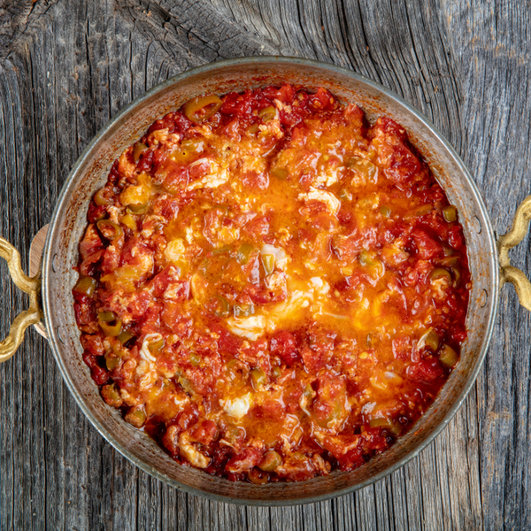

Menemen

Description
You’ll love this easy menemen recipe of soft, perfectly scrambled eggs with tomatoes, peppers, and onions! This simple one-pan dish comes together in 20 minutes or less, and makes the perfect breakfast, lunch, or dinner. Just add your favorite crusty bread to serve along!
What is menemen ?
Menemen is a popular traditional Turkish dish that includes eggs, tomato, green peppers, and spices such as ground black and red pepper cooked in olive oil.
Three Important tips
- Start with quality ingredients. This is one humble dish that is truly greater than the sum of its parts, so it is important to start with quality produce. Look for firm green bell peppers without smooth skins and no blemishes (or other green peppers such as Anaheim or Holland peppers). Select smooth skinned tomatoes that are firm but have some give when you apply a bit of pressure. They should be fragrant and feel heavy for their size, which indicates they are juicy and delicious. For me, I also make sure to use quality extra-virgin olive oil, which will add richness and flavor to this dish.
- Do not overcook the eggs. The key to the best menemen recipe is to scramble the eggs very gently over medium-low heat until just set. The eggs should be moist and pillow-y and never dry or overcooked.
- Serve with thick slices of a hearty, country-style bread.
Find a loaf of bread with great texture and a crisp crust to serve along; this is a must for dunking into the sauce and pillow-y eggs.
Ingredients
- 2 tablespoons extra virgin olive oil
- 1 medium yellow onion chopped
- 1 green bell pepper (Anaheim or Holland peppers will work as well), cored, seeded and chopped
- Kosher salt
- 2 vine-ripe tomatoes, chopped
- 3 tablespoons tomato paste
- Black pepper
- ½ teaspoon dried oregano
- 1 teaspoon Aleppo pepper, more for later
- 4 large eggs, beaten
- Crushed red pepper flakes, optional if you like spicy
- 1 French baguette for serving thickly sliced (optional)
Steps
- In a 10-inch skillet, heat 2 tablespoons over medium heat. Add the onions and peppers and season with kosher salt. Cook for 4 to 5 minutes, stirring regularly until softened (being careful not to brown the onions).
- Add the tomatoes and tomato paste. Season with a little more kosher salt, black pepper, oregano, and Aleppo pepper. Cook for a few minutes over medium heat, stirring occasionally, until the tomatoes soften but still hold their shape (5 to 7 minutes).
- Push the tomato and pepper mixture to one side of the pan. Lower the heat to medium-low. Add the beaten egg, and cook briefly, stirring gently as needed, until the eggs are just set. Fold the tomato mixture into the eggs.
- Finish with a little EVOO and more Aleppo pepper and crushed red pepper flakes, if you need a little kick. Serve immediately with thick slices of bread.